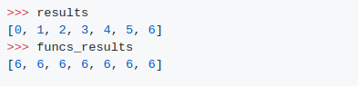
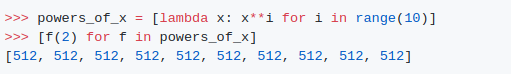
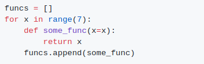
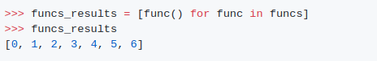

output
funcs에 일부_funcs를 추가하기 전에 모든 반복에서 x의 값이 다른 경우에도 모든 함수는 6을 반환합니다.
OR
설명:
body 안에서 루프 변수를 사용하는 루프 내에서 함수를 정의할 때, 루프 함수의 폐쇄는 그 값이 아니라 변수에 결합됩니다. 그래서 모든 기능들은 계산을 위해 변수에 할당된 최신 값을 사용합니다.
원하는 동작을 취하려면 루프 변수를 함수에 명명된 변수로 전달하세요. 이게 왜 가능할까요? 이는 함수 범위 내에서 변수를 다시 정의하기 때문입니다.

Output:
